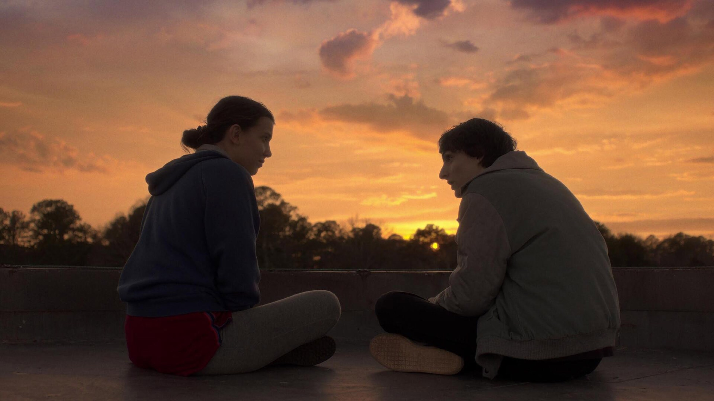
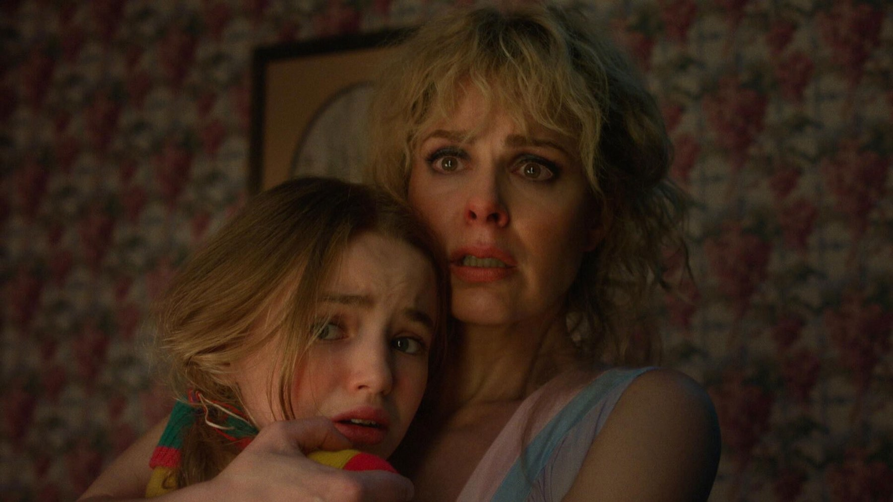
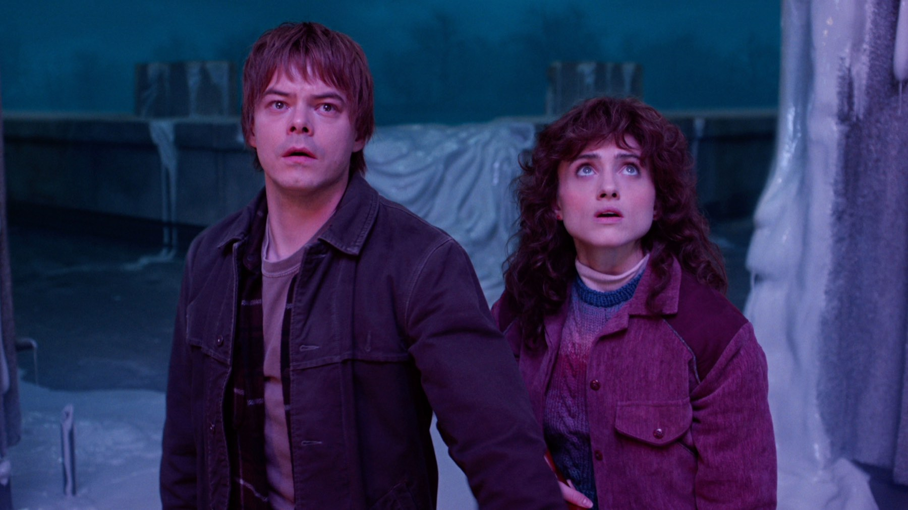

Stranger Things – Stagione 5
Tre volumi, otto episodi e un finale di oltre due ore: i fratelli Duffer chiudono Hawkins tra grandi emozioni e qualche passo falso
Chiudere una serie che ha definito un'epoca è forse la cosa più difficile che possa capitare a chi scrive per la televisione. Matt e Ross Duffer lo sapevano bene, e per salutare Stranger Things, partita su Netflix nell'estate del 2016, hanno scelto la strada più spettacolare possibile: tre uscite scaglionate tra novembre e Capodanno, episodi lunghi come film e un finale di oltre due ore proiettato perfino nei cinema americani. Ora che anche l'ultimo episodio è uscito possiamo guardare alla quinta stagione nel suo insieme. E il bilancio, per noi come per gran parte della critica, è positivo ma non trionfale.
Su Rotten Tomatoes la stagione si ferma all'82% di recensioni positive, su Metacritic a 71 su 100: numeri buoni, ma lontani dall'entusiasmo che aveva accolto i primi capitoli. Il motivo è semplice: questa stagione regala momenti bellissimi e allo stesso tempo inciampa in difetti che è impossibile ignorare. Proviamo a separare le due cose, senza spoiler.
Di cosa parla la quinta stagione di Stranger Things?
Siamo nel novembre del 1987, una ventina di mesi dopo gli eventi della quarta stagione. Hawkins non è più la cittadina tranquilla dell'Indiana che conoscevamo: porta ancora addosso le ferite dello scontro precedente e vive sotto il controllo dei militari. Il gruppo di amici si ritrova per un'ultima missione, con un obiettivo chiaro: trovare Vecna e chiudere i conti con il Sottosopra una volta per tutte.
Tornano tutti i volti storici, da Millie Bobby Brown a Winona Ryder e David Harbour, da Finn Wolfhard a Sadie Sink, con Jamie Campbell Bower di nuovo nei panni del villain. Le new entry più attese sono Linda Hamilton, che interpreta la dottoressa Kay, a capo dell'unità militare che dà la caccia a Eleven, e la giovanissima Nell Fisher, nuova interprete di Holly, la sorellina di Mike e Nancy, che stavolta diventa centrale nella storia. Le riprese sono durate quasi un anno intero, dall'8 gennaio al 20 dicembre 2024.

Com'è stata distribuita la stagione finale?
La scelta di Netflix è stata quella di dividere gli otto episodi in tre blocchi, trasformando l'uscita in un evento natalizio. Il primo volume, con quattro episodi, è arrivato il 26 novembre 2025; il secondo, con tre episodi, il giorno di Natale; il finale, intitolato The Rightside Up, la sera del 31 dicembre. Quest'ultimo dura 128 minuti, è scritto e diretto dagli stessi Duffer ed è stato proiettato in 620 sale tra Stati Uniti e Canada tra Capodanno e il primo gennaio. Una curiosità: per via dei contratti del cast non si vendevano biglietti veri e propri, ma buoni da spendere al bar del cinema. Ne sono stati venduti in anticipo 1,1 milioni, per un incasso dalle consumazioni superiore ai 25 milioni di dollari.
Cosa funziona
Partiamo dalla confezione, che è semplicemente da cinema. Ogni episodio ha un budget e una cura visiva che pochissime serie al mondo possono permettersi, e la colonna sonora elettronica di Kyle Dixon e Michael Stein resta uno dei marchi di fabbrica più riconoscibili della televisione di questi anni. Christian Colli su Multiplayer.it, che assegna alla stagione 8 su 10, parla di valori produttivi eccezionali per il piccolo schermo e definisce lo scontro finale spettacolare e diretto con mano sicura.
Il primo volume, poi, ha fatto esattamente quello che doveva fare: dopo tre anni e mezzo di attesa ci ha riportato a Hawkins con la stessa magia degli inizi, mescolando avventura, paura e quella nostalgia anni Ottanta che è il DNA della serie. I nuovi personaggi funzionano e danno un po' d'aria a un gruppo che, inevitabilmente, è cresciuto. E Jamie Campbell Bower continua a essere un antagonista magnetico: Michael Walsh su Nerdist indica la sua prova come uno dei punti più alti del finale, rimpiangendo semmai che gli sia stato concesso così poco tempo sullo schermo.

Non un addio perfetto, ma un addio sincero: Stranger Things saluta i suoi ragazzi e la loro infanzia.
Cosa non funziona
Il problema principale è il secondo volume. Tre episodi lunghi più di un'ora ciascuno, pieni di dialoghi e di spiegazioni, che rallentano bruscamente il ritmo proprio quando la storia dovrebbe correre verso la fine. Alcune scene di questo blocco hanno acceso discussioni infuocate tra i fan. Colli arriva a dire che questi passaggi hanno rischiato di compromettere l'intero finale.
Il secondo difetto è strutturale. Marco Tedesco sul Cineocchio, che si ferma a 6,5, nota come la mitologia abbia ormai preso il posto del mistero: tutto viene spiegato, spesso con dialoghi didascalici, e il cast enorme costringe la serie a saltare di continuo da un personaggio all'altro, disperdendo la tensione. Sia lui sia Multiplayer.it trovano poi superflua la linea narrativa dei militari, che toglie spazio ai protagonisti e non sfrutta a dovere una presenza come quella di Linda Hamilton.
C'è infine una sensazione che torna in molte recensioni americane: la minaccia finale viene risolta in modo un po' troppo agevole, e i Duffer sembrano aver avuto paura di mettere davvero in pericolo i loro ragazzi. È una critica comprensibile per una serie che ci aveva abituato a perdite dolorose, anche se chi ha amato i personaggi per quasi dieci anni potrebbe vederla come una scelta di affetto più che di prudenza.
Com'è il finale di Stranger Things?
Senza rivelare nulla: The Rightside Up si divide in due metà molto diverse. La prima è un lungo, compatto blocco d'azione; la seconda è un congedo disteso, in cui la serie si prende tutto il tempo per salutare uno per uno i suoi personaggi. È qui che la critica si divide. Per Tedesco questo epilogo rischia di diventare un elenco di addii che diluisce l'emozione, e anche Walsh lo trova troppo lungo; eppure lo stesso Walsh conclude che il finale funziona proprio perché dà una risposta sia alla trama sia al percorso dei personaggi.
Noi stiamo con chi si è commosso. Stranger Things è sempre stata, prima di tutto, una storia di amicizia e di crescita, e questo finale ha il coraggio di ricordarcelo: l'infanzia finisce, ma quello che si è costruito insieme resta. Non tutto torna e non tutti i fili vengono chiusi, tanto che il destino di alcuni personaggi ha diviso parecchio i fan, ma la porta, come scrive Multiplayer.it, si chiude senza sbattere.
Vale la pena vederla?
Se avete seguito Stranger Things fin dall'inizio, la risposta è ovviamente sì: è la conclusione di una delle serie più importanti dell'ultimo decennio, e il finale ripaga gran parte della fatica. Il consiglio è di armarvi di pazienza per il secondo volume, che è il punto più debole, e di guardare l'ultimo episodio come si guarda un film, sullo schermo più grande che avete. Tutte e cinque le stagioni sono disponibili su Netflix: se non avete mai iniziato, questo è il momento ideale per una maratona dall'inizio alla fine.
Se da un lato la stagione finale si perde in spiegazioni, militari di troppo e un secondo volume lento, dall'altro regala una confezione da cinema e un addio che arriva dritto al cuore. Non è la stagione migliore di Stranger Things, ma è una chiusura degna.
Domande frequenti
Quanti episodi ha Stranger Things 5?
Otto episodi, usciti su Netflix in tre volumi: quattro il 26 novembre 2025, tre il 25 dicembre e il finale il 31 dicembre.
Quanto dura il finale di Stranger Things?
L'ultimo episodio, The Rightside Up, dura 128 minuti ed è scritto e diretto dai fratelli Duffer.
Dove vedere Stranger Things 5?
Tutte le stagioni di Stranger Things, compresa la quinta, sono disponibili in abbonamento su Netflix.
Fonti consultate (7)
- Wikipedia – Stranger Things season 5
- Wikipedia – Stranger Things
- Wikipedia – Chapter Eight: The Rightside Up
- Multiplayer.it – Stranger Things, la recensione della stagione finale (Christian Colli)
- Il Cineocchio – Stranger Things 5, la recensione del finale (Marco Tedesco)
- Nerdist – Stranger Things series finale review (Michael Walsh)
- JustWatch / TMDB – dove vederla in Italia